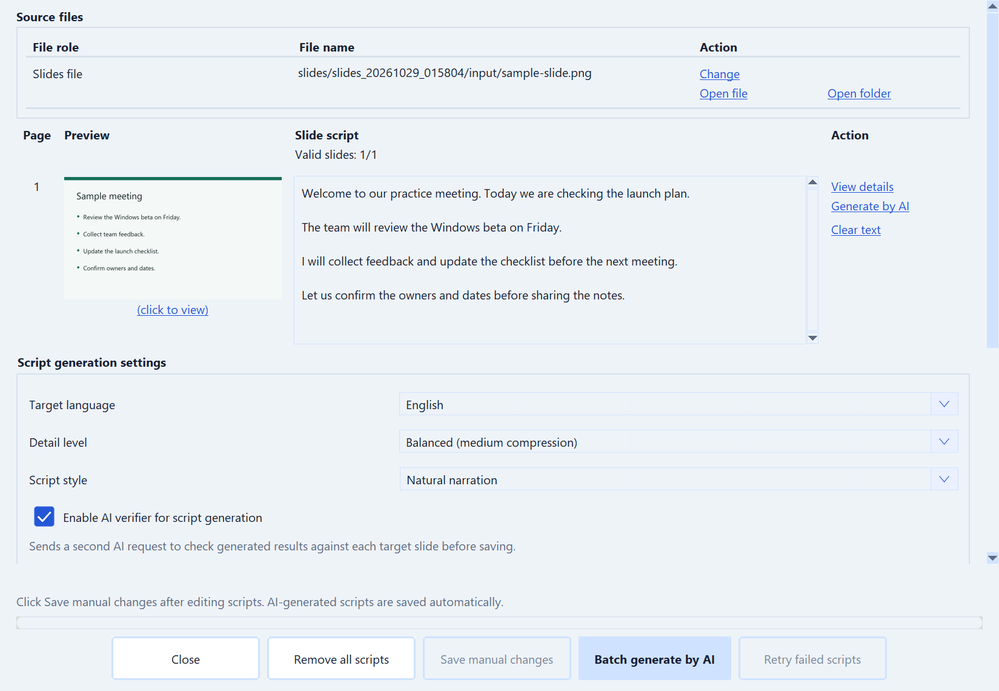
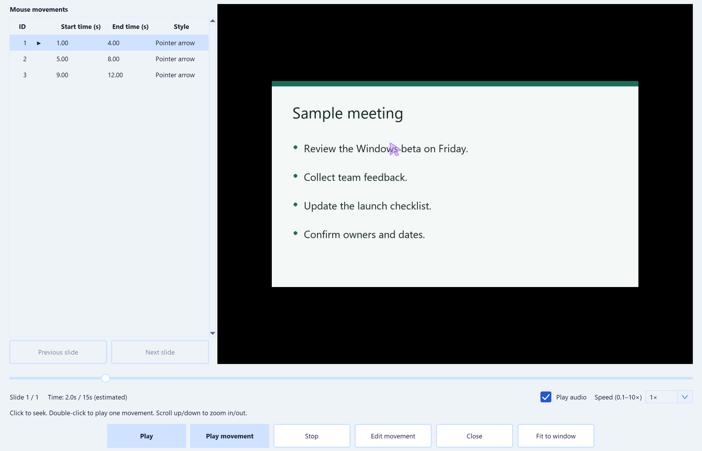

A look inside MeetSimpler.
See where you capture a meeting, read the transcript and work with AI. These snapshots show the actual Windows interface with sample meeting text, without recording audio or making AI requests.
The same interface also works for lectures, audio and video recordings, podcasts and personal notes. The meeting labels shown in these snapshots remain the same in the app.
Snapshots use sample content and may differ from your installed version. Choose a page language to see the matching app interface. Follow the start guide for setup and capture instructions.
Live analysis and translation · Capture screenshots · Record video · Desktop shortcuts
Follow the start guideYour meeting workspace.
The dashboard brings meeting controls, a transcript in foldable blocks and shared live analysis together. Summary controls chunk summaries; Translation offers On, Off and Auto. Detailed analysis opens the expanded workspace.
- Use Start meeting to begin and Click to stop meeting to finish.
- Read confirmed speech in Live Transcript; temporary recognition appears underneath.
- Use Analysis links in the transcript to reveal matching live results. Fold or unfold blocks to focus your reading.
- Use Meeting folder to find the locally saved records.
This demo shows the setup reminders before a speech model and AI model have been selected. The transcript and summary are sample text.
Learn how to start your first meeting
Ask a question while the context is fresh.
Select AI chat from the dashboard to open a separate workspace. Ask your configured provider to explain a discussion, extract decisions or draft follow-up notes.
- Use the message box and Send to ask your own question.
- Select Partial summary to summarize a chosen time range.
- Select Final summary after the meeting has finished saving.
- For questions about the discussion, enable Meeting context: On and Transcript context: On in the sidebar before sending.
- Review the context and files included in your request before sending.
- Voice input can send the draft automatically after a pause. Check Voice auto send before dictating. For selected text, open the right-click menu and choose Ask AI to explain or Ask AI to summarize.
The example response is sample text. Meeting context and transcript context are on in this snapshot. AI features use your configured provider and may incur provider charges.
Learn how to review and save the results · Chat voice input
Analyze speech as it arrives.
Use Summary and Translation in Meeting Control, or open Detailed analysis for transcript, live results and selective results in separate columns. Both windows show the same saved analysis; opening a window does not start a second pipeline.
This sample shows translated speech, a chunk summary and a selective result. No AI request was sent. The selectable text and foldable sections are the actual desktop widgets.
Explore the Analysis workspace
Connect the AI provider you choose.
AI provider config now lists saved online and local profiles. Add a model configuration, test and save it, then check the profile to use. Edit opens the matching online or local editor.
This sample shows an empty configuration list. No provider credentials or account details are included.
Follow the AI setup steps
Generate speech and presentation videos
Turn a draft or meeting notes into local speech, or create narrated slide videos with optional pointer highlights. Review scripts, choose a voice and language, then find audio and MP4 outputs in Results.
Generate speech and presentation videos
Narrated slides
Review each slide beside its narration and audio status, edit the script, then generate slide audio before exporting video. Script and audio links open the saved files or their folders. The workflow shows which steps still need attention. Pointer highlights are optional.
Pointer highlights · Speech files and results
Write slide scripts
Write narration beside each slide, save manual edits explicitly, or generate scripts with the active AI profile. Choose a target language, detail level and script style. Batch controls select the slide range and surrounding context; failed-slide retries keep successful results.
Write slide scripts · Script styles
Preview pointer highlights
Check your highlights before exporting video. The playback window combines the slide, movement list, timeline and speed controls. Select a movement, seek to its position or preview it on its own without changing the saved timing.
Pointer highlights
Try a short practice meeting.
The start guide takes you from downloading the Windows app to checking your first transcript and summary.
Set up MeetSimpler